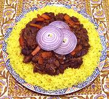

|
Lamb Plov UzbekCentral Asia - Uzbekistan - Kovurma Palov | ||||
| Serves: Effort: Sched: DoAhead: |
5 main *** 8-3/4 hrs Yes |
This is the most famous dish of Central Asia, especially in Uzbekistan. The traditional one pan method is prone to failure until you have years of experience. This recipe offers near traditional results without so much risk. See Authenticity | |||
|
|
1-1/2 1-1/2 10 1 2 ar 1/2 1/16 ------- 2 1/2 1 2 1/2 ------- 3 2/3 ------- ar ------- |
# # oz med c t t ----- t t t t t ----- T c ----- ----- |
Lamb Meat (1) Onions Carrots Garlic Head Rice (2) Lamb Broth (2) Salt Saffron (3) -- Spicing Cumin Seeds Chili flake (4) Paprika Salt Pepper, black -------- Lamb Fat (5) Water -- Garnish Red Onion -- Options (7) |
Do Ahead - (7 hrs - 25 min work)
|
Problems: This is a one-shot make and serve. Also, success takes a lot of practice to get it right, and if the rice isn't perfect, it's a fail. If it's burned at the bottom, it's a fail. The cooking equipment, heat control, and amount of water or broth applied must be controlled with precision, and timing is critical. Until recently, only men were allowed to make plov, and they were well trained by their fathers on the same equipment they would eventually use. Today, many recipes just stir raw rice into the Zervak to make the cooking less critical, but that isn't authentic.
As mentioned above, authenticity requires it to be practically swimming in Sheep Tail Fat, not the way we want it in North America. The proper cooking appliance is a Kazan, a large wok-like pan with a very tight fitting lid. Traditionally it is of cast iron, but most today are cast aluminum. In Uzbekistan, mostly yellow carrots are used, but those are hard to find in North America where orange ones dominate, but those work fine.